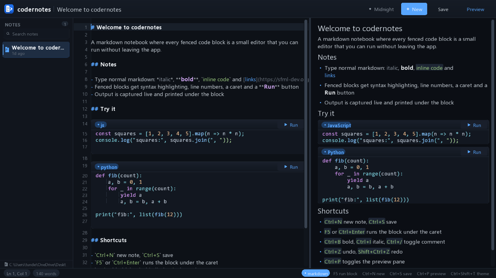

A space for your thoughts and drafts.
codernotes is a markdown notebook where every code block runs. Sketch the idea in prose, drop a fenced snippet underneath, hit Run, and the output lands right there in the document — no terminal, no second window, no copy-paste. Then you keep the file.

Notes and code usually live apart
A thought gets written in one app, the snippet gets pasted into a terminal, the output gets pasted back, and by then the thread of reasoning is gone. codernotes keeps the whole loop in one document.
Prose and code, one file
Every fenced block becomes its own editor with syntax highlighting, line numbers and a caret. The paragraph above it is still prose.
Run without leaving
Output streams back underneath the block that produced it, with the exit code and how long it took. F5 runs the block under your caret, so you can iterate in place.
You own the file
Notes are plain .md on disk, autosaved. No database, no
proprietary format, no account, no sync service, no telemetry.
Delete the app and your writing is still readable.
It looks like this
A draft, mid-thought, with a snippet you are still arguing with. The markers stay dim in the editor; the preview shows what it will become.
## Sorting, take four // the previous version mutated the input def sorted_copy(items): return sorted(items[:]) print(sorted_copy([3, 1, 2]))
Sorting, take four ▸ exit 0 0.03s ▶ Run def sorted_copy(items): return sorted(items[:]) print(sorted_copy([3, 1, 2])) [1, 2, 3]
19 languages, whatever you already have
codernotes shells out to the toolchain on your PATH. It does
not bundle compilers or ship a sandbox, so there is nothing to install
beyond what you already use. A missing toolchain shows up as a non-zero
exit in the block's output rather than a silent failure.
TypeScript shells out to npx --yes tsx, so it needs network
access the first time. SQL runs through the sqlite3 shell.
Four themes, one keystroke
Ctrl + Shift + T cycles them and the choice is remembered between launches. Each one is a full palette — backgrounds, borders, syntax colours, selection and shadows — not an inverted filter.
The keys you already expect
Nothing clever. The shortcuts are the conventional ones.
Download v0.1.0
A single self-contained executable with SFML linked statically. Unzip or
untar, run it, done. Notes are created in a notes/ folder
next to wherever you launch it from.
Built on Ubuntu 24.04, so the Linux binary needs glibc 2.39 or newer. The macOS build is unsigned, so Gatekeeper will ask you to right-click → Open the first time. Intel Macs are not covered by this release.
Build it yourself
You need xmake and a C++17 compiler. SFML is fetched for you.
# from a clone of the repository xmake f -m release xmake ./build/linux/x86_64/release/codernotes # or the platform equivalent
There is also --selftest, which runs 32 assertions over
layout, input, persistence and themes against a real GL context.
Read the README
for the full flag list.